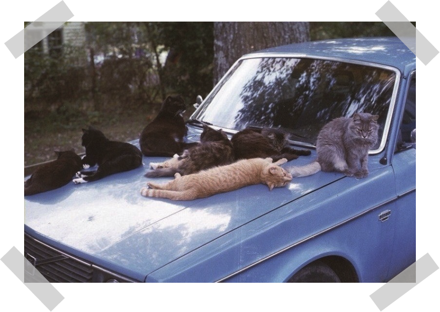

<!DOCTYPE html><html lang="ru-RU"></html><head><link href="style.css" rel="stylesheet"></head><body><header><nav class="menu"><ul><li><a class="nav-link" href="#">Кто мы</a></li><li><a class="nav-link" href="#">Что мы делаем</a></li><li><a class="nav-link" href="#">Как помочь</a></li><li><a class="nav-link" href="#">Взять животное</a></li></ul></nav></header><div class="container"><div class="row"><div class="box"><div class="block1"></div><div class="block2"><h1>Частный приют для домашних животных</h1><p>К нам попадают те, от кого отказались, кого предали, кто просто в один минг перестал быть нужным. Иногда для спасения достаточно совсем немного, стоит увидеть чьи-то обречённые глаза и сделать порой совсем немного, чтобы вернуть им веру в людей.</p></div><div class="block3"></div></div></div></div><footer><p>Bulokhova Valeriya, BSTU</p></footer></body>